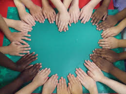
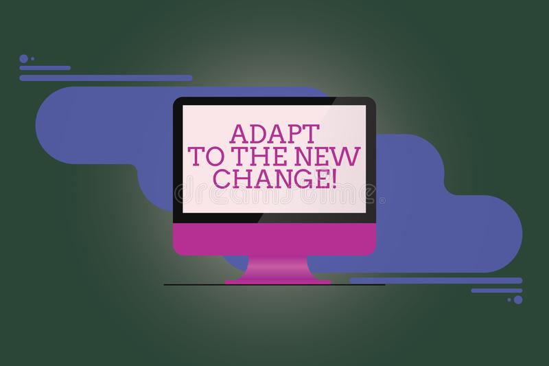
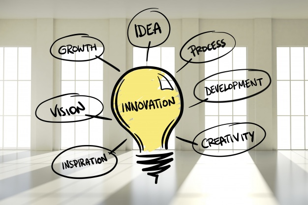

Gain in Empathy
According to research by Ghaus, Waheed, Khan, Mustafa, Siddique, and Waqar Quershi (2020), the pandemic heightened medical students' sense of empathy. Prior to the pandemic, the authors noted a drop in empathy amongst dental students at the Islamic International Dental College, Islamabad each year as they progressed through their medical program and received more clinical experience. During the pandemic, students were quarantined and had to transition to online courses. When they were able to return to practice, …the data was re-collected from the same population, surprising results were obtained. Therefore, the present study not only calculated the change in empathy levels between the first and the final year which was evident previously, but it also showed a marked and significant improvement in the empathy levels of the students after facing the pandemic (Ghaus, et. all, 2020, p. S114). While the researchers acknowledged that the unique circumstances would make this study hard to replicate, they hypothesized that the underpinning theme of death and chaos that the students were immersed in may have helped heighten their ability to empathize with others.
Gains in Adaptability Skills
As previously mentioned, the pandemic affected the work and school life of millions. For students enrolled in residential programs, where they planned to meet face-to-face with their instructors in peers, they were in in-person classes one day and in cyberspace the next. Some of these students had never experienced online classes before; in some cases the transition was shocking, and required students to adjust to a new way of learning. This format required strong time management skills and self-regulation with (in many cases) no substantive training on how to move forward. Overwhelmingly, students struggled with this sudden change, and while most struggled, many survived the change. A few thrived! For example, because of the quick switch from in-person to completely virtual, students gained adaptability skills. Besser and Flett (2020) surveyed over 1,000 Israeli college students about their adaptability to online schooling, in order to understand how college students had to adjust to sudden change (2020, p. 2). Their preliminary findings are that this pandemic forced people to adapt to new ways of learning. These are skills that are not easily forgotten and will be useful for present and future days (Besser and Flett, 2020, pp. 18-19). This pandemic pushed us all to live with uncertainty for the future. We don’t know when exactly things will return to the ways they were before, or if they even will. Nevertheless, the world keeps turning and life keeps moving forward. All we can do is adapt to new situations. As Elizabeth Heath states, adaptability “was an important survival skill even before the pandemic” (2020). But now, in a world of constant change, adaptability has become a necessary trait, and it is teaching us many useful lessons. For example, we are learning to live through discomfort, and we are learning how to deal with that (Heath, 2020). Being able to face these trying times and to get through them teaches us how to cope and how to adjust. And since life, in general, is unpredictable, adaptability is indeed a valuable skill we are gaining from this pandemic.
College Innovations
The switch to fully remote learning was perhaps thought to be a short-term change that would last for only a few weeks when schools first shifted to this model. It turned out that this was not the case. After experiencing fully remote learning for half of a semester, universities around the world noted rising infection rates and deaths over the summer. With no vaccine in sight, it was clear that things would not be able to return to normal during 2020. This pushed colleges and universities to plan ways to support their students in ways that were dramatically different from the norm. In this section we look at some of the innovations that arose as students shifted to hybrid and online modes of learning. According to Keystone Academic Solutions, universities are seeing that being a digital academic school makes them more available to students who might not have been able to go to them for higher education (n.d.). Indeed, students may have wanted to go to a specific college but couldn’t because they couldn’t move there. Moving to digital schooling seems to have shown innovation that may be useful for future schooling. We are seeing a trend in schools realizing how remote learning can have advantages. (Keystone Academic Solutions, n.d.). However, the future is still unclear. Will schools keep virtual learning an option, or will schools drop all virtual classes? If anything, it is safe to say that the pandemic forced innovative changes and these changes will certainly affect future teaching/learning. Technology played a huge, dependable role in education during the pandemic. It seems that technology will continue to play an important role.
Schedule Flexibility
There were mixed reactions from students about the shift to online classes. Trinity Washington University president Patricia McGuire explains, "Academically, while we want to focus on still having quality and rigor, we want to be as flexible as possible so that no one is penalized because of this extremely bizarre situation" St. Amour (2020).” There are plenty of reasons for this. According to Lei (2020), “students have experienced positive things from going fully virtual. For example, being a virtual college student gave them more freedom. Many college students have responsibilities that are difficult to juggle when they have to go to classes. But virtual classes allow them to create their own schedules.” Having this freedom means that college students with strong time management skills and a developed level of self-regulation can handle school and responsibilities at the same time.” Students that are parents are in a unique situation. Douglas-Gabriel (2020) shares “Colleges and universities have long struggled to meet the needs of the estimated 4.3 million undergraduates — about one in five — with children”. If universities work with students to make sure they understand the differences in workloads for different modalities of courses, this could be a great option for some students who had not previously considered alternative forms of higher education outside of traditional face-to-face settings. While students who are parents would still have to find childcare while they focus on their studies, they may have more options outside of daycare, due to the flexibility that asynchronous and some hybrid learning options allow.
References
Besser, A., Flett, G. L. and V. Zeigler-Hill. (2020 October 19). Adaptability to a sudden transition to online learning during the COVID-19 pandemic:Understanding the challenge for students. Scholarship of Teaching and Learning Psychology. Retrieved from http://dx.doi.org/10.1037/stl0000198
Douglas-Gabriel, D.. (2020 September 28). ‘It’s a lot to juggle’: College students with children are overwhelmed this school year. The Washington Post. Retrieved from https://www.washingtonpost.com/education/2020/09/28/college-parents-coronavirus/
Ghaus, S., et. al. (2020 December 14). Effect of COVID-19 pandemic on the levels of empathy among undergraduate dental students in Pakistan. National Library of Medicine, 110-115. doi: 10.1055/s-0040-1722091.
Heath, E. (2020 May 26). Adaptability may be your most essential skill in the covid-19 world. The Washington Post. Retrieved from https://www.washingtonpost.com/lifestyle/wellness/adaptability-coronavirus-skills/2020/05/26/8bd17522-9c4b-11ea-ad09-8da7ec214672_story.html
Keystone Academic Solutions. (n.d.). Adaptability in the face of a pandemic: how students and universities have prevailed. The World University Rankings. Retrieved from https://www.timeshighereducation.com/hub/keystone-academic-solutions/p/adaptability-face-pandemic-how-students-and-universities-have
Scott, M. M., Shakesprere, J., and K. Porter. (2020 October 26). Why schools should embrace flexibility and innovation beyond COVID-19: More options for learning can benefit all students, especially working teenagers. Urban Institute. Retrieved from https://www.urban.org/features/why-schools-should-embrace-flexibility-and-innovation-beyond-covid-19
St. Amour, M. (2020 March 31). A double whammy for student parents. Inside Higher Ed. Retrieved from https://www.insidehighered.com/news/2020/03/31/student-parents-are-hit-doubly-hard-coronavirus